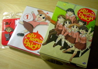

今日こそは、と会社を19時くらいに抜け出していよいよ「Azumanga Daioh」のDVDを買いに行きました。
一番Animeコーナーの充実しているBestBuyに行ったのですが、置いてない！AzumangaのAの字もないよ！「Ah! My goddess」とかいらない！
夕飯も食わずに(阿呆)、DVDを扱ってる店を探しまわった結果、一番望み薄だと思っていたFry'sで無事確保。Fry'sは今日回った中でも最も会社に近いため、長距離をぐるりと回って、また会社まで戻ってきたに等しいです。遅くなっちゃったし、もうとっとと帰りますよ！
帰宅後、さっそく視聴を開始。ちよちゃんもすごいが榊さんの吹き替えもすげぇ！大阪はちょっとちゃうねん…。総じて吹き替えはほとんど違和感がありません。米国発売元のADVフィルムは、「起動戦艦ナデシコ」(買ったのかよ…)では画面の全ての字を英語に上書きしていましたが、「Azumanga Daioh」では、英語字幕をonにしない限りは何の変更もありません。置き換わっているのはOP/EDのみでした。わかってるね！(もちろん日本語音声もありますよ)
気がつくと３回くらい視聴していました。そして、心は満たされましたが、胃は満たされていません。大丈夫でしょうか(僕は)。